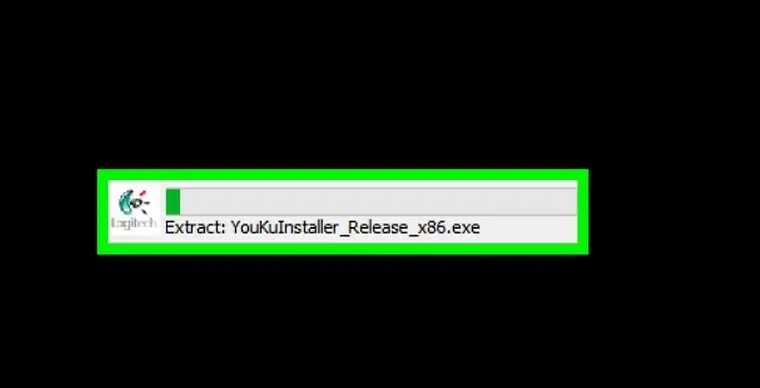

Instalación:
Paso 1:
Conecta la cámara web a la computadora: conecta el cable USB de la cámara web a uno de los puertos USB rectangulares en la parte lateral o trasera de la computadora.
Paso 2:
Introducir el CD de la cámara web: poner el CD que venga con la cámara en la unidad de CD del portátil, asegurándote de que el logo esté boca arriba durante el proceso.
Paso 3:
Espera a que se abra la página de configuración de la cámara web. La página de configuración de la cámara web se abrirá automáticamente. Si la cámara viene sin CD, el proceso de configuración generalmente iniciará al conectar la cámara web a la computadora.
Paso 4:
Sigue las instrucciones en pantalla. Las instrucciones de las cámaras web varían según el modelo, pero para la mayoría de los procesos de configuración hay que hacer clic en una serie de ventanas de preferencia antes de hacer clic en el botón Instalar.
Paso 5:
Espera a que la cámara web termine de instalar. Cuando haya terminado de instalarse, se abrirá el programa correspondiente, que es cuando podrás empezar a configurar la cámara.
Configurar la WebCam:
Paso 1:
Abre el programa de la cámara web. Si el programa de la cámara web no se abre automáticamente después de terminada la instalación, tendrás que buscarlo y abrirlo manualmente.
Paso 2:
Fija la cámara web. Muchas cámaras tienen un clip en la base que permite sujetarlas a la parte superior del monitor de una computadora. Si la tuya no viene con clip, busca un espacio plano y elevado donde puedas poner la cámara.
Paso 3:
Ajusta la cámara web según sea necesario. En el centro de la ventana del programa de la cámara web, verás el video en tiempo real de la cámara. Usando el video como referencia, ajusta la cámara web al ángulo de tu preferencia hacia tu cara.
Paso 4:
Prueba el sonido de la cámara web. Mientras hablas frente a la cámara, busca picos de actividad al lado de la sección “Audio” (o un título similar) en la ventana de la cámara web. Si no ves ninguna actividad, el micrófono de la cámara no estará funcionando y quizá tengas que habilitarlo desde los ajustes de la cámara web o de la computadora.
Paso 5:
Cambia los ajustes de la cámara web de ser necesario. La mayoría de los programas de las cámaras web tienen la sección Ajustes (o un icono con forma de engranaje) en alguna parte de la ventana. Puedes hacer clic en esta sección para visualizar y cambiar ajustes como el contraste, la respuesta a la luz baja, etc.

Consejos básicos para usar la WebCam de forma segura:
1º La WebCam debe ofrecer información detallada sobresu propietario.
2º La WebCam ppuede ofrecer información que no se debe mostrar.
3º Lo que envía la WebCam puede ser grabado en otro lugar.
4º La WebCam puede estar manipulada de forma remota por malware.
5º No es adecuado usar el intercambio de imágenes para conocer la indetidad de otra persona.